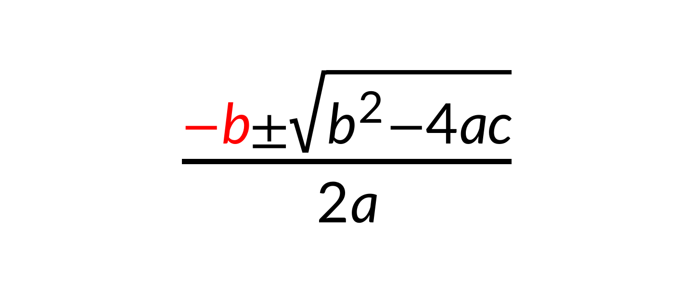
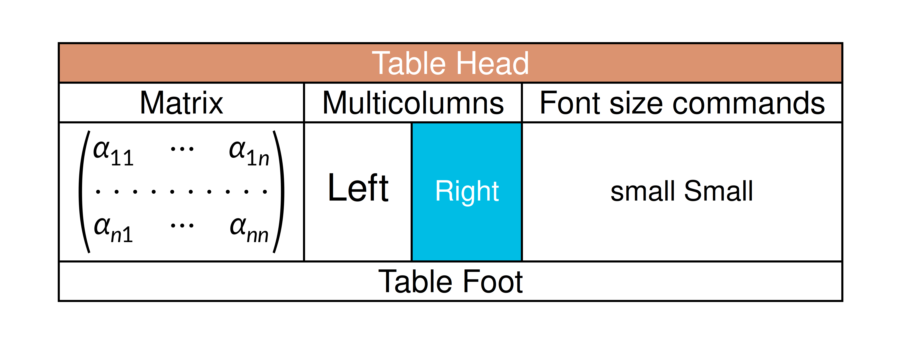
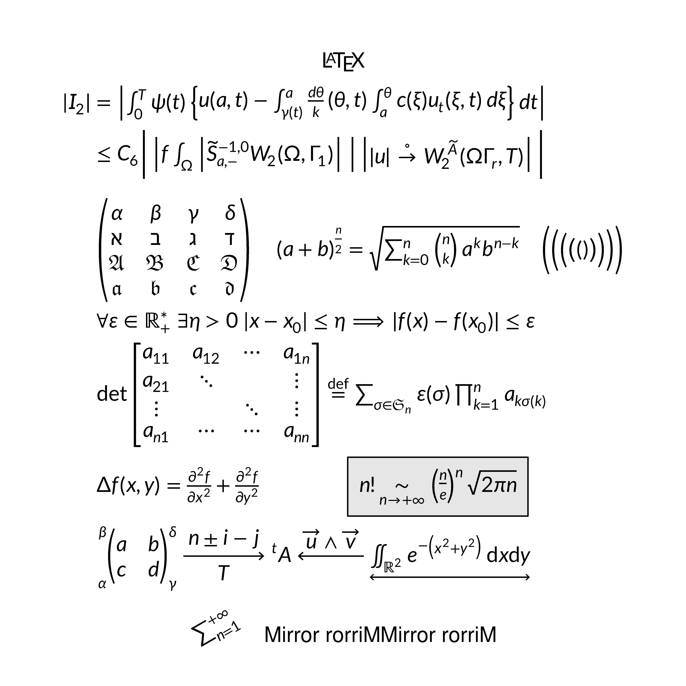
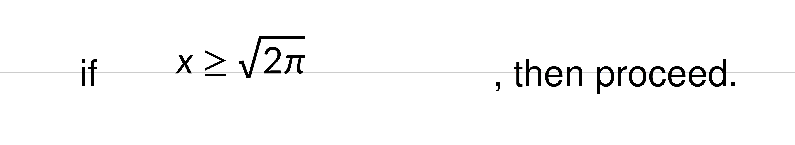
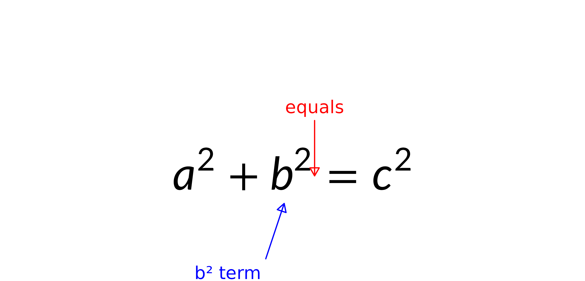

What is gridmicrotex?
gridmicrotex renders LaTeX math as native R
grid graphics objects. It embeds the MicroTeX C++ engine:
MicroTeX parses the LaTeX, builds the TeX box model and computes exact
glyph coordinates, and the package maps that layout onto grid primitives
(pathGrob, segmentsGrob,
rectGrob, textGrob), returning a
gTree.
No LaTeX installation is required, and the result is resolution independent on every R device.
- Full math: fractions, roots, integrals, matrices, Greek, accents,
delimiters, and colour via
\textcolor{} - Two bundled math fonts, plus any OpenType math font through
load_math_font() - CJK and multilingual text inside
\text{} - ggplot2 integration —
geom_latex()andelement_latex(), seevignette("ggplot2-integration") - Markdown with inline math — see
vignette("markdown")
Quick start
latex_grob() returns a grob; grid.latex()
builds and draws one.
library(gridmicrotex)
library(grid)
grid.newpage()
grid.latex(r"($\frac{\textcolor{red}{-b} \pm \sqrt{b^2 - 4ac}}{2a}$)",
gp = gpar(fontsize = 24))
Write LaTeX in a raw string. r"(...)"
passes backslashes through untouched, so what you paste is what renders.
Every example here uses one. In an ordinary "..." string
each \ has to be doubled — and LaTeX’s own row separator
\\ becomes a bewildering \\\\.
Mixing text and math
The default input_mode = "mixed" reads the string as
prose and typesets only what sits inside $…$ or
\(…\) as math, which is why Famous: below
needs no markup. It saves typing, but the split is heuristic.
input_mode = "math" treats the whole string as math, so
prose must be wrapped in \text{}; that suits heavy math and
pasted LaTeX. These two render identically:
grid.newpage()
grid.latex(r"(Famous: $E = mc^2$)",
x = 0.05, y = 0.7, hjust = 0, gp = gpar(fontsize = 22))
grid.latex(r"(\text{Famous: } E = mc^2)", input_mode = "math",
x = 0.05, y = 0.3, hjust = 0, gp = gpar(fontsize = 22))Set the mode for a whole session with
latex_options(input_mode = ).
What it can render
Two figures before the details, because the range is easier to see
than to describe. A coloured array with
\multicolumn, \rowcolor,
\cellcolor, a custom column type and a nested matrix:
grid.newpage()
grid.latex(r"(
\newcolumntype{s}{>{\color{#1234B6}}c}
\begin{array}{|c|c|c|s|}
\hline
\rowcolor{Tan}\multicolumn{4}{|c|}{\textcolor{white}{\bold{\text{Table Head}}}}\\
\hline
\text{Matrix}&\multicolumn{2}{|c|}{\text{Multicolumns}}&\text{Font size commands}\\
\hline
\begin{pmatrix}
\alpha_{11}&\cdots&\alpha_{1n}\\
\hdotsfor{3}\\
\alpha_{n1}&\cdots&\alpha_{nn}
\end{pmatrix}
&\large \text{Left}&\cellcolor{#00bde5}\small \textcolor{white}{\text{\bold{Right}}}
&\small \text{small Small}\\
\hline
\multicolumn{4}{|c|}{\text{Table Foot}}\\
\hline
\end{array}
)", gp = gpar(fontsize = 22))
And a page of assorted notation — split alignment,
fraktur, stacked delimiters, \sideset, extensible arrows,
\rotatebox, \reflectbox and a boxed
result:
grid.newpage()
grid.latex(r"(
\definecolor{gris}{gray}{0.9}
\definecolor{noir}{rgb}{0,0,0}
\fatalIfCmdConflict{false}
\newcommand{\pa}{\left|}
\begin{array}{c}
\LaTeX\\
\begin{split}
|I_2| &= \pa\int_0^T\psi(t)\left\{ u(a,t)-\int_{\gamma(t)}^a \frac{d\theta}{k} (\theta,t) \int_a^\theta c(\xi)
u_t (\xi,t)\,d\xi\right\}dt\right|\\
&\le C_6 \Bigg|\pa f \int_\Omega \pa\widetilde{S}^{-1,0}_{a,-}
W_2(\Omega, \Gamma_1)\right|\ \right|\left| |u|\overset{\circ}{\to} W_2^{\widetilde{A}}(\Omega\Gamma_r,T)\right|\Bigg|\\
&\\
&\begin{pmatrix}
\alpha&\beta&\gamma&\delta\\
\aleph&\beth&\gimel&\daleth\\
\mathfrak{A}&\mathfrak{B}&\mathfrak{C}&\mathfrak{D}\\
\boldsymbol{\mathfrak{a}}&\boldsymbol{\mathfrak{b}}&\boldsymbol{\mathfrak{c}}&\boldsymbol{\mathfrak{d}}
\end{pmatrix}
\quad{(a+b)}^{\frac{n}{2}}=\sqrt{\sum_{k=0}^n\tbinom{n}{k}a^kb^{n-k}}\quad
\Biggl(\biggl(\Bigl(\bigl(()\bigr)\Bigr)\biggr)\Biggr)\\
&\forall\varepsilon\in\mathbb{R}_+^*\ \exists\eta>0\ |x-x_0|\leq\eta\Longrightarrow|f(x)-f(x_0)|\leq\varepsilon\\
&\det
\begin{bmatrix}
a_{11}&a_{12}&\cdots&a_{1n}\\
a_{21}&\ddots&&\vdots\\
\vdots&&\ddots&\vdots\\
a_{n1}&\cdots&\cdots&a_{nn}
\end{bmatrix}
\overset{\mathrm{def}}{=}\sum_{\sigma\in\mathfrak{S}_n}\varepsilon(\sigma)\prod_{k=1}^n a_{k\sigma(k)}\\
&\Delta f(x,y)=\frac{\partial^2f}{\partial x^2}+\frac{\partial^2f}{\partial y^2}\qquad\qquad \fcolorbox{noir}{gris}
{n!\underset{n\rightarrow+\infty}{\sim} {\left(\frac{n}{e}\right)}^n\sqrt{2\pi n}}\\
&\sideset{_\alpha^\beta}{_\gamma^\delta}{
\begin{pmatrix}
a&b\\
c&d
\end{pmatrix}}
\xrightarrow[T]{n\pm i-j}\sideset{^t}{}A\xleftarrow{\overrightarrow{u}\wedge\overrightarrow{v}}
\underleftrightarrow{\iint_{\mathds{R}^2}e^{-\left(x^2+y^2\right)}\,\mathrm{d}x\mathrm{d}y}
\end{split}\\
\rotatebox{30}{\sum_{n=1}^{+\infty}}\quad\mbox{Mirror rorriM}\reflectbox{\mbox{Mirror rorriM}}
\end{array}
)", gp = gpar(fontsize = 22), render_mode = "path")
Both are ordinary LaTeX, pasted unchanged. The rest of this vignette is about placing such things, choosing fonts, and knowing where the supported set ends.
Placing formulas
x, y, hjust and
vjust work as they do anywhere in grid.
grid.newpage()
grid.latex(r"($E = mc^2$)", x = 0.05, y = 0.7, hjust = 0,
gp = gpar(fontsize = 22))
grid.latex(r"($F = ma$)", x = 0.95, y = 0.3, hjust = 1,
gp = gpar(fontsize = 22))Aligning to the math baseline
hjust and vjust also take names. The useful
one is vjust = "baseline", which puts the formula’s
math baseline — not the bounding-box centre — on the anchor, so
a formula sits beside running text the way it would in a typeset
document.
grid.newpage()
y <- 0.5
grid.segments(unit(0, "npc"), unit(y, "npc"),
unit(1, "npc"), unit(y, "npc"), gp = gpar(col = "grey80"))
grid.text("if ", x = 0.10, y = y, just = c(0, 0.5), gp = gpar(fontsize = 16))
grid.latex(r"($x \geq \sqrt{2\pi}$)",
x = 0.22, y = y, hjust = "left", vjust = "baseline",
gp = gpar(fontsize = 16))
grid.text(", then proceed.", x = 0.62, y = y, just = c(0, 0.5),
gp = gpar(fontsize = 16))
hjust accepts "left"/"bbleft",
"center"/"centre"/"middle"/
"bbcentre", and
"right"/"bbright". vjust accepts
"bottom",
"center"/"centre"/"middle",
"top", and "baseline".
Named anchors with \mark{}
\mark{name} records a named anchor inside the formula,
and grobMark() resolves it to a pair of grid units ready to
drive an arrow or a callout. Marks work at any nesting level — even
inside a superscript or a fraction — and inherit the surrounding
transform (font shrink, scaling, rotation), so the anchor lands on the
rendered glyph.
g <- latex_grob(r"($a^2 + b\mark{term}^2 \mark{equals}= c^2$)",
x = 0.5, y = 0.4, gp = gpar(fontsize = 28))
grid.newpage()
grid.draw(g)
# The "=" sign, pointed at from above.
mk_eq <- grobMark(g, "equals")
grid.segments(mk_eq$x, mk_eq$y + unit(15, "mm"),
mk_eq$x, mk_eq$y + unit(3, "mm"),
arrow = arrow(length = unit(2, "mm"), type = "closed"),
gp = gpar(col = "red"))
grid.text("equals", x = mk_eq$x, y = mk_eq$y + unit(18, "mm"),
gp = gpar(col = "red", fontsize = 11))
# The b^2 term, from below -- the mark sits at the end of the term,
# including the superscript's smaller scale.
mk_bsq <- grobMark(g, "term")
grid.segments(mk_bsq$x - unit(6, "mm"), mk_bsq$y - unit(15, "mm"),
mk_bsq$x - unit(2, "mm"), mk_bsq$y - unit(3, "mm"),
arrow = arrow(length = unit(2, "mm"), type = "closed"),
gp = gpar(col = "blue"))
grid.text("b² term", x = mk_bsq$x - unit(7, "mm"),
y = mk_bsq$y - unit(18, "mm"), just = "right",
gp = gpar(col = "blue", fontsize = 11))
The returned units carry the grob’s viewport position and
hjust/vjust, so they go straight into any grid
drawing function with no offset arithmetic. A mark is a single point,
not a span: to centre a callout over a multi-glyph term, use a pair
(\mark{l}…\mark{r}) and take the midpoint.
Fonts
Two layers are in play. MicroTeX chooses the math
glyphs and their metrics; grid draws everything inside
\text{} using gp$fontfamily, so prose follows
R’s ordinary font handling — Latin, CJK, Cyrillic and anything else the
device supports.
Two math fonts ship with the package and load automatically:
| Alias | Font | Style | Pairs with |
|---|---|---|---|
"lete" (default) |
Lete Sans Math | Sans-serif | fontfamily = "sans" |
"stix" |
STIX Two Math | Serif | fontfamily = "serif" |
available_math_fonts()
#> [1] "DejaVu Sans" "Lete Sans Math" "STIX Two Math"Set one per call with math_font, or for the session with
latex_options(math_font = ). Both rows below are the same
formula — only the math font and its paired text family differ:
formula <- r"(Theorem: $\int_0^1 f(x)\,dx \geq 0$)"
grid.newpage()
pushViewport(viewport(layout = grid.layout(2, 1)))
pushViewport(viewport(layout.pos.row = 1))
grid.latex(formula, gp = gpar(fontsize = 15, fontfamily = "sans"))
upViewport()
pushViewport(viewport(layout.pos.row = 2))
grid.latex(formula, math_font = "stix",
gp = gpar(fontsize = 15, fontfamily = "serif"))
upViewport(2)check_math_fonts() gives a diagnostic report. Any font
available to R works for the text half — base families like
"sans", "serif" and "mono", or
anything registered through systemfonts:
grid.newpage()
grid.latex(r"(如果 $x > 0$ 则 $y = x^2$)",
gp = gpar(fontsize = 24, fontfamily = "sans"))Naming a font for one run
gp$fontfamily applies to the whole grob. For a
single run, use \gmfontfamily{family}{content} — a
gridmicrotex extension, not standard LaTeX. \textrm{…} goes
the other way, returning content to gp$fontfamily even
inside a \textsf{…}, \texttt{…} or
\gmfontfamily{…}{…} group, and without disturbing bold or
italic:
grid.newpage()
grid.latex(
r"(\textsf{sans \textrm{body} sans} \quad \gmfontfamily{mono}{mono})",
gp = gpar(fontsize = 16, fontfamily = "serif")
)family is anything gp$fontfamily accepts: a
generic ("sans", "serif", "mono")
or a specific name such as "Georgia", which
\textsf{…} / \texttt{…} cannot express.
Unresolvable names fall back silently. The content is typeset as text,
so this styles prose, not math — math glyphs follow
math_font. It composes with emphasis in either nesting
order, but a nested \gmfontfamily replaces the
family it sits inside.
The name is deliberately not \fontfamily: LaTeX’s takes
one argument, does nothing until \selectfont, and wants an
NFSS code (ptm) rather than a font name. Since gridmicrotex
accepts pasted LaTeX, claiming that name would silently misparse real
input. This is also what markdown’s font-family CSS
compiles to — see vignette("markdown").
Loading a custom math font
load_math_font() adds any OpenType math font. The
OpenType MATH table is parsed directly in C++, so no companion metrics
file and no external toolchain are needed:
load_math_font("path/to/MyFont.otf")This is only for math fonts. Text fonts need no
loading at all — set gp$fontfamily, or name one for a run
with \gmfontfamily{}{}.
Devices and render modes
-
"typeface"(default) draws glyphs as native text, so PDF and SVG output stays selectable and searchable: a line of prose is emitted as a single element, so a viewer finds a phrase and not merely a word. Text given amax_widthis the exception — it is emitted one word per element, because the spaces are where the lines break. Fonts are read straight from their OTF files, with no system-wide install — but this needs a device with the R 4.3 glyph engine (ragg,svglite,cairo_pdf). On others, such as the basepdf()device, it falls back to path mode with a warning. -
"path"draws each glyph as a filled vector path. Works on every device; the text is not selectable, and files are larger.
grid.latex(r"($E = mc^2$)", gp = gpar(fontsize = 24)) # typeface
grid.latex(r"($E = mc^2$)", gp = gpar(fontsize = 24), render_mode = "path") # pathPrefer ragg::agg_png(), svglite::svglite()
or grDevices::cairo_pdf(). The default devices on Windows
and macOS may not find the bundled math fonts and will warn
font family not found in Windows font database; the README
covers the setup, and compares the package with tikzDevice,
xdvir, latex2exp and
plotmath.
Do not use
showtext::showtext_auto()with typeface mode. showtext intercepts all text rendering and converts it to paths, silently defeating typeface mode even onsvgliteandragg. Callshowtext::showtext_auto(FALSE)before drawing formulas.
Utilities
Measuring
latex_dims() returns the bounding box of an expression,
for layout arithmetic and for checking that a label fits:
latex_dims(r"(\frac{a}{b})", gp = gpar(fontsize = 20))
#> $width
#> [1] 7bigpts
#>
#> $height
#> [1] 25bigpts
#>
#> $depth
#> [1] 9bigpts
#>
#> $baseline
#> [1] 9.36317294836044bigpts
#>
#> $is_split
#> [1] FALSESession defaults
latex_options() sets math_font,
render_mode and input_mode for calls that
don’t supply them; explicit arguments always win. Size stays at the grob
level, via gp$fontsize / gp$lineheight.
latex_options(math_font = "stix", render_mode = "typeface")
latex_options() # query
reset_latex_options() # back to built-in defaultsUser-defined macros
define_macro() registers zero-argument shorthands,
expanded by text substitution before the expression reaches
MicroTeX:
define_macro("RR", r"(\mathbb{R})")
define_macro("eps", r"(\varepsilon)")
grid.newpage()
grid.latex(r"(\forall \eps > 0, \eps \in \RR)", gp = gpar(fontsize = 24))Names must be ASCII letters, and expansion iterates to a fixed point
so macros can reference each other. list_macros() shows
what is registered; clear_macros() drops everything.
For parameterised macros (0–9 arguments) MicroTeX also accepts
plain-TeX \def. These live only for the expression they
appear in, so use them for an abbreviation local to one label and
define_macro() for one that should persist:
grid.newpage()
grid.latex(
r"(\def\norm#1{\left\lVert #1 \right\rVert}
\norm{\vec{v}} = \sqrt{\langle \vec{v}, \vec{v} \rangle})",
gp = gpar(fontsize = 24)
)Caching and introspection
Parsed layouts are memoised by
(tex, fontsize, math_font, render_mode, …), so a repeated
axis label is laid out once:
latex_cache_info() # size / max_size / hits / misses
latex_cache_limit(1024) # LRU capacity; 0 disables caching
latex_cache_clear() # wipe (e.g. after re-loading fonts)latex_tree() returns the raw draw records plus bbox
metadata, and debug = TRUE overlays the bounding box,
baseline and record origins — both useful when checking alignment:
grid.newpage()
grid.latex(r"($x^{2} + y_{i}$)", gp = gpar(fontsize = 30), debug = TRUE)LaTeX reference
MicroTeX is a math formula renderer, not a document typesetter. It covers the vast majority of notation used in plots and figures, but does not replace a LaTeX installation. This section is the boundary.
Lists
itemize and enumerate lay their items out
as a left-aligned column, one per row — itemize prefixes a
bullet, enumerate numbers them:
grid.newpage()
grid.latex(r"(\begin{enumerate}
\item e^{i\pi} + 1 = 0
\item \begin{itemize}
\item \alpha \item \beta
\end{itemize}
\end{enumerate})", gp = gpar(fontsize = 20))An optional […] argument customises the marker. For
itemize it is the literal marker
(\begin{itemize}[\star]); for enumerate it is
a counter template containing one of \arabic*,
\alph*, \Alph*, \roman* or
\Roman* (e.g. \begin{enumerate}[\Roman*.]).
Lists nest, and an item may contain any math, including a
\begin{array} table.
Because MicroTeX is a math engine, each item is a math-mode,
single-line expression: no paragraph flow, no line wrapping,
and prose inside an item needs \text{}
(\item \text{First point}). The description
environment is not supported.
Pasting LaTeX from other sources
Input generated by other tools — ready-to-compile
tabular snippets, fragments copied out of a
.tex file — usually arrives wrapped in document-level
constructs MicroTeX does not implement. Rather than refusing it,
gridmicrotex rewrites or removes a small set of well-known wrappers
before parsing, so knitr::kable(format = "latex") and
xtable::print.xtable() output can be pasted in
unedited:
snippet <- r"(
% latex table generated by kable()
\begin{table}[ht]
\centering
\caption{Model coefficients}
\begin{tabular}{lrr}
\toprule
Term & Estimate & \emph{p} \\
\midrule
Intercept & 2.14 & 0.003 \\
Slope & 0.42 & 0.001 \\
\bottomrule
\end{tabular}
\end{table}
)"
grid.newpage()
grid.latex(snippet, input_mode = "mixed", gp = gpar(fontsize = 11))Six things were handled without any editing: the %
comment and the table float were dropped,
\centering removed, \caption set as a line
above the table, \toprule/\bottomrule became
thick rules, \midrule a plain one, and \emph
became italic.
Note that the cell text is set in math italics. A
tabular is a math environment, so its contents are math
whichever input_mode you choose — the two modes give an
identical layout for the snippet above. What "mixed" buys
you here is the prose outside the environment, such as the
caption. For upright cell text, wrap the cells in
\text{}.
Removed silently (no visual effect):
| Construct | Why |
|---|---|
%-to-end-of-line comments (\% is
preserved) |
comments are non-visual in LaTeX too |
\documentclass[…]{…},
\usepackage[…]{…}
|
preamble metadata |
\begin{document} / \end{document}
|
document boundary, structural only |
\maketitle, \title{…},
\author{…}
|
title-page metadata, no body output |
\label{…} |
cross-reference target, never rendered in LaTeX either |
\begin{table}[…] / \end{table},
\begin{figure}[…] / \end{figure} (and starred
variants) |
float wrappers; the contents stay |
\centering, \raggedright,
\raggedleft, \flushleft,
\flushright
|
alignment scope declarations |
\noindent, \relax
|
content-free declarations |
Rewritten to a MicroTeX equivalent:
| Construct | Becomes |
|---|---|
\emph{X} |
\textit{X} |
\textnormal{X} |
\text{X} |
\par, \newline
|
\\ (line break) |
\toprule, \bottomrule
|
\thickhline (rendered ~2× thickness) |
\midrule |
\hline |
\cmidrule[trim]?(parenarg)?{a-b} |
\cline{a-b} — partial-column rule |
\caption[short]{X} |
\text{X} plus a line break, at its source position — so
a caption written above the table stays above it |
\smallskip, \medskip,
\bigskip
|
\vspace{0.25em} / \vspace{0.5em} /
\vspace{1em} — em-relative so they scale with
gp$fontsize
|
\hfill, \vfill
|
\quad / \vspace{1em} — static proxies for
rubber lengths |
\url{X} |
coloured monospace text — a grob cannot be a hyperlink, so only the appearance survives |
\href{U}{X} |
X, coloured. Matches hyperref with
colorlinks=true; markdown links use HTML’s
blue-and-underlined convention instead |
Three of those are approximations. \caption renders
where it appears in the source, not where LaTeX’s float machinery would
move it, so caption-above or caption-below follows whatever your tool
emits. The skips are em-relative rather than LaTeX’s absolute 3/6/12 pt,
so they stay visible at any gp$fontsize; use
\vspace{Xpt} for an exact amount. And \hfill /
\vfill are rubber lengths with nothing to fill in
a fixed-size grob, so they become a static 1 em gap — right position, no
elasticity.
Not honored — rendered as literal text, which is intentional: it makes unsupported markup easy to spot.
- Declarative font scopes:
\bfseries,\itshape,\ttfamily,\sffamily,\rmfamily. These affect text within their group in LaTeX, which needs scope tracking we do not implement. Use the argument-bearing forms instead —\textbf{…},\textit{…},\texttt{…},\textsf{…},\textrm{…}— all of which nest. To choose the text font itself, setgp$fontfamilyor use\gmfontfamily{…}{…}. - References:
\ref{…},\cite{…}— there is nothing to resolve against. - Footnotes:
\footnote{…}— the positioning machinery is page-bound. - Small caps:
\textsc{…}— MicroTeX has no small-caps glyphs.
What is not supported
These need a real document compiler and are outside a formula
renderer’s scope: document structure (\section, page
layout, \tableofcontents); automatic hyphenation
(\- marks a break point yourself, and
max_width / justify do handle line breaking);
TikZ/PGF; \includegraphics; cross-references and
bibliographies; theorem environments; the description list
environment (itemize and enumerate
are supported); and \tag / equation numbering.
\usepackage{…} is accepted but loads nothing — every
supported command is built into MicroTeX.
For axis labels, annotations, legends and in-plot formulas, the supported set is more than sufficient.